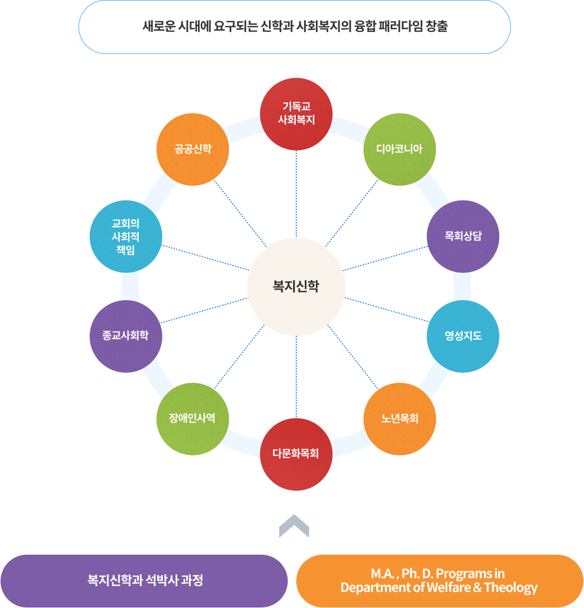

졸업 후 진로
복지신학 석박사 과정에 초대합니다!
1885년, 아펜젤러가 설립한 한국 최초의 대학

새로운 시대에 요구되는 신학과 사회복지의 융합 패러다임 창출
- 복지신학과 석박사 과정
- M.A. , Ph. D. Programs in Department of Welfare & Theology
- 복지신학
- 기독교 사회복지
- 디아코니아
- 목회상담
- 영성지도
- 노년목회
- 다문화목회
- 장애인사역
- 종교사회학
- 교회의 사회적 책임
- 공공신학
기독교의 신학과 교리에서 사회참여·실천에 대한 조명이 새롭게 이루어지고 있습니다. 이제 사회복지는 교회의 본질적인 역할, 교회의 개혁을 위해 매우 중요한 과제가 되어가고 있습니다. 사회복지의 역사를 살펴보면, 기독교는 사회복지를 탄생시켰다고 해도 과언이 아니며, 지금도 사회복지의 공급을 위한 중요한 자원을 가지고 있습니다. 목회자와 평신도 및 종교복지 관심자를 대상으로, 신학과 복지를 융합한 교육과 훈련을 실시하는 것은 시급히 요청되는 시대적 과제입니다. 복지신학 석박사 과정은 새로운 시대에 새로운 사명을 감당하는 인재를 양성하는 전문과정이 될 것입니다. 복지신학 석박사 과정에 뜻있는 여러분의 많은 참여를 바랍니다!
과정개요
| 구분 | 한글명 | 영문명 |
|---|---|---|
| 학과명 | 복지신학과 | Dept. of Welfare & Theology |
| 전공명 | 복지신학 | Welfare & Theology |
| 학위명 | 복지신학석사 | M.A. in Welfare & Theology |
| 복지신학박사 | Ph.D. in Welfare & Theology |